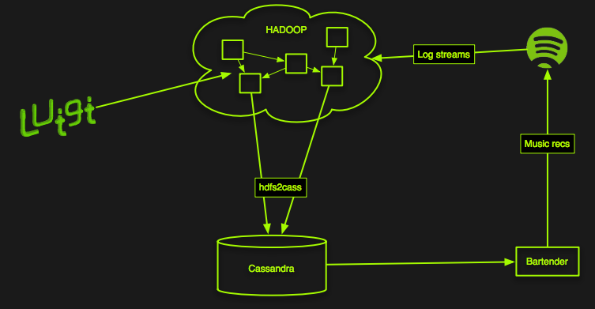
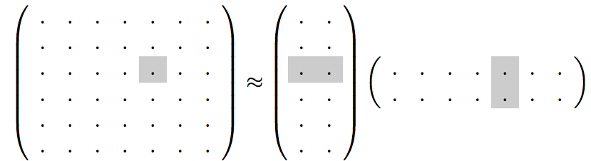
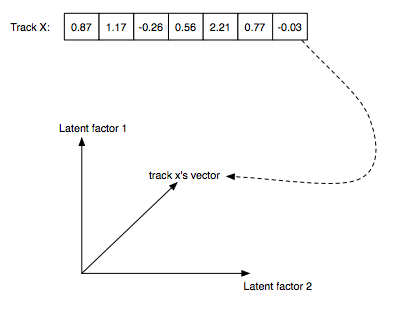
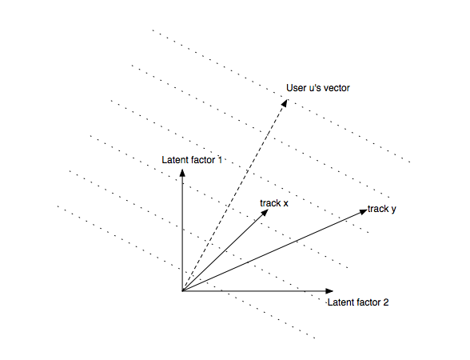
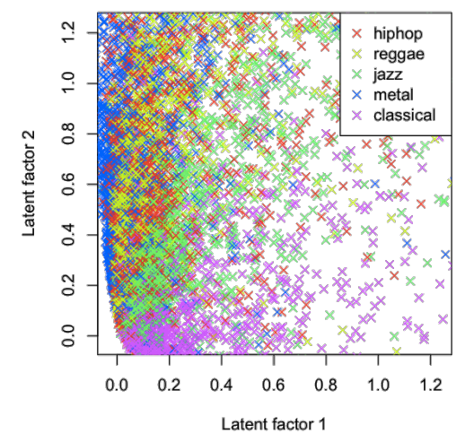
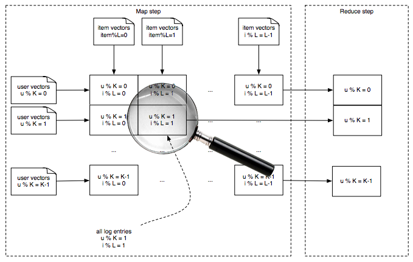
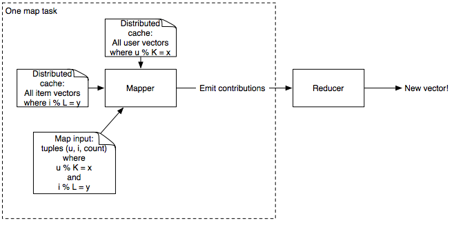
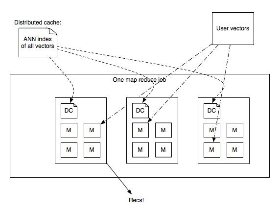
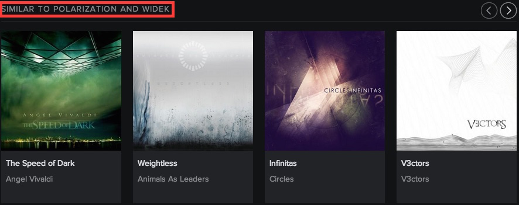

Machine Learning & Big Data @
Andy Sloane
@a1k0n
http://a1k0n.net
Madison Big Data Meetup
Jan 27, 2015
What do we need ML for?
- Recommendations
- Related Artists
- Radio
Recommendations
The Discover page
Collaborative filtering
- Each time a user plays something, add it to a matrix
- Compute similarity, somehow, between items based on who played what
Collaborative filtering
- So compute some distance between every pair of rows and columns
- That's just O($\frac{{60M}^2}{2}$) = O($1.8\times 10^{15}$) operations... O_O
- We need a better way...
https://blog.twitter.com/2014/all-pairs-similarity-via-dimsum)
I've tried it but don't have results to report here yet :(
Collaborative filtering
Latent factor models
Instead, we use a "small" representation for each user & item: $f$-dimensional vectors
(here, $f=2$)
and approximate the big matrix with it.
Why vectors?
- Very compact representation of musical style or user's taste
- Only like 40-200 elements (2 shown above for illustration)
Recommendations via dot products
Another example of tracks in two dimensions
Implicit Matrix Factorization
Hu, Koren, Volinsky - Collaborative Filtering for Implicit Feedback Datasets
Tries to predict whether user $u$ listens to item $i$:
\[P = \left( \begin{array}{cccc} 0 & 0 & 0 & 1 \\ 0 & 1 & 1 & 0 \\ 0 & 0 & 1 & 0 \\ 1 & 0 & 0 & 1 \end{array} \right) \approx \left( \begin{array}{ccc} & X & \end{array} \right) \left( \begin{array}{c} \\ Y^T \\ \\ \end{array} \right) \]
$Y$ is all item vectors, $X$ is all user vectors
"implicit" because users don't tell us what they like, we only observe what they do/don't listen to
Implicit Matrix Factorization
Goal: make $x_u \cdot y_i$ close to 1 for things each user has listened to, 0 for everything else.- $x_u$ — user $u$'s vector
- $y_i$ — item $i$'s vector
- $p_{ui}$ — 1 if user $u$ played item $i$, 0 otherwise
- $c_{ui}$ — "confidence", ad-hoc weight based on number of times user $u$ played item $i$; e.g., $1 + \alpha \cdot \tt{plays}_{ui}$
- $\lambda$ — regularization penalty to avoid overfitting
Alternating Least Squares
Solution: alternate solving for all users $x_u$: \[ x_u = (Y^T Y + Y^T (C^u - I) Y + \lambda I)^{-1} Y^T C^u p_{u\cdot} \] and all items $y_i$: \[ y_i = (X^T X + X^T (C^i - I) X + \lambda I)^{-1} X^T C^i p_{\cdot i} \]- $Y^T Y$ = $f$ x $f$ matrix, sum of outer products of all items
- $Y^T (C^u - I) Y$ same, except only items the user played
- $Y^T C^u p_u$ = weighted $f$-dimensional sum of items the user played
Alternating Least Squares
Key point: each iteration is linear in size of input, even though we are solving for all users x all items, and needs only $f^2$ memory to solve
No learning rates, just a few tunable parameters ($f$, $\lambda$, $\alpha$)
All you do is add stuff up, solve an $f$x$f$ matrix problem, and repeat!
We use $f = 40$ dimensional vectors for recommendations
Matrix/vector math using numpy in Python, breeze in scala
Alternating Least Squares
Adding lots of stuff up
- Problem: any user (60M) can play any item (4M)
- thus we may need to add any user's vector to any item's vector
- If we put user vectors in memory, it takes a lot of RAM!
- Worst case: 60M users * 40 dimensions * sizeof(float) = 9.6GB of user vectors
- ...too big to fit in a mapper slot on our cluster
Adding lots of stuff up
Solution: Split the data into a matrix Most recent run made a 14 x 112 grid
One map shard
Input is a bunch of (user, item, count) tuplesuser is the same modulo K for all users
item is the same modulo L for all items 
e.g., if K = 4, mapper #1 gets users 1, 5, 9, 13, ...
Adding stuff up
Add up vectors from every (user, item, count) data point
def mapper(self, input): # Luigi-style python job
user, item, count = parse(input)
conf = AdHocConfidenceFunction(count) # e.g. 1 + alpha*count
# add up user vectors from previous iteration
term1 = conf * self.user_vectors[user]
term2 = np.outer(user_vectors[user], user_vectors[user])
* (conf - 1)
yield item, np.array([term1, term2])
def reducer(self, item, terms):
term1, term2 = sum(terms)
item_vector = np.solve(
self.YTY + term2 + self.l2penalty * np.identity(self.dim),
term1)
yield item, item_vector
Finding Recommendations
60M users x 4M recommendable items- For each user, how do we find the best items given their vector?
- Brute force is O(60M x 4M x 40) = O(9 peta-operations)!
- Instead, use an approximation based on locality sensitive hashing (LSH)
Approximate Nearest Neighbors /
Locality-Sensitive Hashing
Annoy - github.com/spotify/annoy
Annoy - github.com/spotify/annoy
- Pre-built read-only database of item vectors
- Internally, recursively splits random hyperplanes
- Nearby points likely on the same side of random split
- Builds several random trees (a forest) for better approximation
- Given an $f$-dimensional query vector, finds similar items in database
- Index loads via
mmap, so all processes on the same machine share RAM - Queries are very, very fast, but approximate
- Python implementation available, Java forthcoming
Generating recommendations
- Annoy index for all items is only 1.2GB
- I have one on my laptop... Live demo!
- Could serve up nearest neighbors at load time, but we precompute Discover on Hadoop
Generating recommendations in parallel
- Send annoy index in distributed cache, load it via
mmapin map-reduce process - Reducer loads vectors + user stats, looks up ANN, generates recommendations.
Related Artists
Related Artists
- Great for music discovery
- Essential for finding believable reasons for latent factor-based recommendations 
- When generating recommendations, run through a list of related artists to find potential reasons
Similar items use cosine distance
- Cosine is similar to dot product; just add a normalization step
- Helps "factor out" popularity from similarity
Related Artists
How we build it
- Similar to user recommendations, but with more models, not necessarily collaborative filtering based
- Implicit Matrix Factorization (shown previously)
- "Vector-Exp", similar model but probabilistic in nature, trained with gradient descent
- Google word2vec on playlists
- Echo Nest "cultural similarity" — based on scraping web pages about music!
- Query ANNs to generate candidates
- Score candidates from all models, combine and rank
- Pre-build table of 20 nearest artists to each artist
Radio
Radio
ML-wise, exactly the same as Related Artists!- For each track, generate candidates with ANN from each model
- Score w/ all models, rank with ensemble
- Store top 250 nearest neighbors in a database (Cassandra)
- User plays radio → load 250 tracks and shuffle
- Thumbs up → load more tracks from the thumbed-up song
- Thumbs down → remove that song / re-weight tracks
Upcoming work
Upcoming work
Audio fingerprint based content deduplication
- ~1500 Echo Nest Musical Fingerprints per track
- Min-Hash based matching to accelerate all-pairs similarity
- Fast connected components using Hash-to-Min algorithm - $O(\log d)$ mapreduce steps
http://arxiv.org/pdf/1203.5387.pdf
Thanks!
I can be reached here:
Andy Sloane
Email: andy@a1k0n.net
Twitter: @a1k0n
http://a1k0n.net
Special thanks to Erik Bernhardsson, whose slides I plagiarized mercilessly